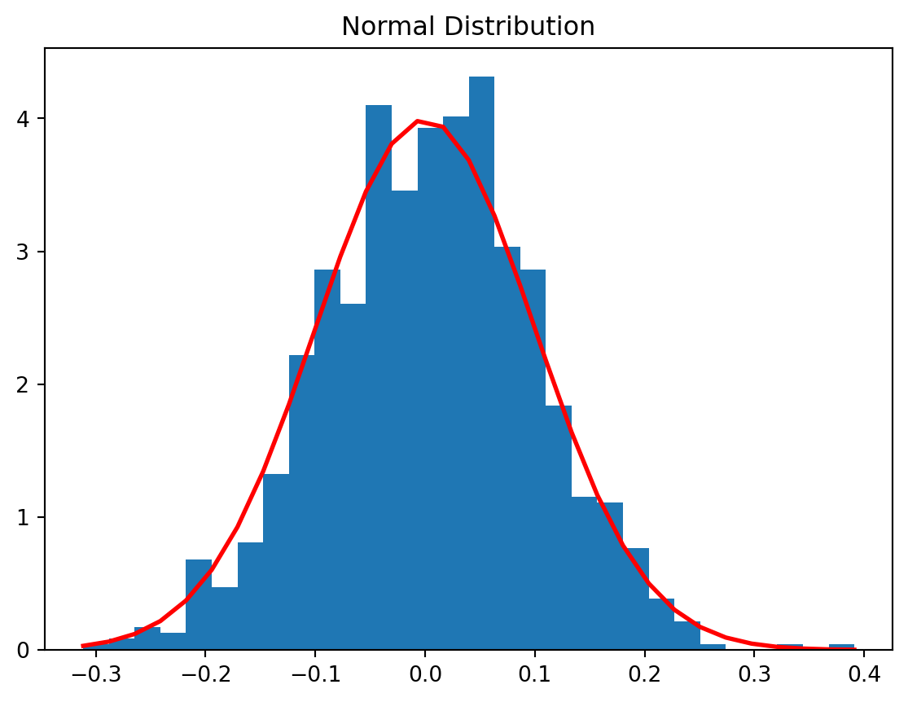

Probability Theory and Random Variables are fundamental concepts in statistics and machine learning that underpin various analytical and predictive techniques. Understanding these concepts is crucial for building a strong foundation in data science and applied mathematics. In this blog, we will delve into the basics of Probability Theory and Random Variables, accompanied by Python code examples and visualizations. Additionally, we will demonstrate how these concepts are utilized in practical machine learning applications.
Understanding Probability Theory
What is Probability Theory?
Probability Theory is a branch of mathematics that deals with the analysis of random phenomena. It provides a framework for quantifying uncertainty and making predictions based on available information. The core of Probability Theory revolves around the concept of events, probabilities, and their relationships. In the context of machine learning, probability theory forms the basis for various algorithms, including Bayesian methods and probabilistic models.
Code Example: Simulating Coin Flips
Figure 1 visualises the probability for head and tails based on the dummy data created
Random Variables are variables that can take on various values in a random experiment. They represent the outcomes of random processes and can be discrete or continuous. Random Variables play a crucial role in defining the probability distribution of events and formulating statistical models for data analysis.
Code Example: Generating Normal Distribution from Random Data
Figure 2 visualises the normal distribution on 1000 random values generated for mean 0 and standard diviation of 0.1
Code
import numpy as npimport matplotlib.pyplot as plt# Parameters for the normal distributionmu, sigma =0, 0.1# mean and standard deviation# Generating data points for the normal distributions = np.random.normal(mu, sigma, 1000)# Plotting the histogramcount, bins, ignored = plt.hist(s, 30, density=True)plt.plot(bins, 1/(sigma * np.sqrt(2* np.pi)) * np.exp( - (bins - mu)**2/ (2* sigma**2) ), linewidth=2, color='r')plt.title('Normal Distribution')plt.show()

Figure 2: Normal Distribution
Application in Machine Learning
Machine Learning and Probability Theory
Probability Theory serves as the backbone of various machine learning algorithms, enabling the modeling of uncertainties and making informed predictions. It is extensively used in areas such as classification, regression, and clustering. Algorithms like Naive Bayes, Gaussian Processes, and Hidden Markov Models heavily rely on the principles of Probability Theory. Below given is an implementation of Gaussian Naive Bayes classification using
Code Example: Gaussian Naive Bayes Classifier
Figure 3 visualizes the results of Gaussian Naive Bayes model on the Iris Dataset. Figure 3 (a) shows the confusion matrix, Figure 3 (b) shows the RoC Curve, and Figure 3 (c) shows the Precision Recall Cruve of Gaussian Naive Bayes model on the Iris Dataset
Code
from sklearn import datasetsfrom sklearn.model_selection import train_test_splitfrom sklearn.naive_bayes import GaussianNBfrom sklearn.preprocessing import label_binarizefrom sklearn import metricsfrom itertools import cycleimport pandas as pdimport numpy as npimport matplotlib.pyplot as plt# Loading the iris datasetiris = pd.read_csv('iris_data.csv')X = iris[['sepal_length', 'sepal_width', 'petal_length', 'petal_width']]y = iris['species']y = label_binarize(y, classes=['Iris-setosa', 'Iris-versicolor', 'Iris-virginica'])# Splitting the data into training and testing setsX_train, X_test, y_train, y_test = train_test_split(X, y, test_size=0.3, random_state=1)# Training the Gaussian Naive Bayes modelclf = GaussianNB()clf.fit(X_train, np.argmax(y_train, axis=1))# Making predictions and evaluating the modely_test_pred = clf.predict(X_test)y_test_proba = clf.predict_proba(X_test)print("Accuracy:",metrics.accuracy_score(np.argmax(y_test,axis=1), y_test_pred))print("Precision:", metrics.precision_score(np.argmax(y_test,axis=1), y_test_pred, average='weighted'))print("Recall:", metrics.recall_score(np.argmax(y_test,axis=1), y_test_pred, average='weighted'))print("sensitivity:", metrics.recall_score(np.argmax(y_test,axis=1), y_test_pred, average='weighted'))print("f1 score:", metrics.f1_score(np.argmax(y_test,axis=1), y_test_pred, average='weighted'))print(metrics.classification_report(np.argmax(y_test,axis=1), y_test_pred, target_names = ['Iris-setosa', 'Iris-versicolor', 'Iris-virginica']))cm = metrics.confusion_matrix(np.argmax(y_test,axis=1), y_test_pred)plt.figure(figsize=(4, 3), dpi=600)plt.imshow(cm, interpolation='nearest', cmap=plt.cm.Blues)plt.title('Confusion Matrix')classes = ['Iris-setosa', 'Iris-versicolor', 'Iris-virginica']tick_marks = np.arange(len(classes))plt.xticks(tick_marks, classes)plt.yticks(tick_marks, classes)thresh = cm.max() /2.for i, j in np.ndindex(cm.shape): plt.text(j, i, cm[i, j], horizontalalignment="center", color="white"if cm[i, j] > thresh else"black")plt.tight_layout()plt.ylabel('True label')plt.xlabel('Predicted label')plt.show()# Compute ROC curve and ROC area for each classfpr =dict()tpr =dict()roc_auc =dict()for i inrange(len(classes)): fpr[i], tpr[i], _ = metrics.roc_curve(y_test[:, i], y_test_proba[:, i]) roc_auc[i] = metrics.auc(fpr[i], tpr[i])# Compute micro-average ROC curve and ROC areafpr["micro"], tpr["micro"], _ = metrics.roc_curve(y_test.ravel(), y_test_proba.ravel())roc_auc["micro"] = metrics.auc(fpr["micro"], tpr["micro"])# Plot the ROC curveplt.figure()lw =2colors = cycle(['aqua', 'darkorange', 'cornflowerblue'])for i, color inzip(range(len(classes)), colors): plt.plot(fpr[i], tpr[i], color=color, lw=lw, label='ROC curve of class {0} (area = {1:0.2f})'''.format(classes[i], roc_auc[i]))plt.plot(fpr["micro"], tpr["micro"], label='Micro-average ROC curve (area = {0:0.2f})'''.format(roc_auc["micro"]), color='deeppink', linestyle=':', linewidth=4)plt.plot([0, 1], [0, 1], 'k--', lw=lw)plt.xlim([0.0, 1.0])plt.ylim([0.0, 1.05])plt.xlabel('False Positive Rate')plt.ylabel('True Positive Rate')plt.title('ROC Curve')plt.legend(loc="lower right")plt.show()precision =dict()recall =dict()average_precision =dict()for i inrange(len(classes)): precision[i], recall[i], _ = metrics.precision_recall_curve(y_test[:, i], y_test_proba[:, i]) average_precision[i] = metrics.average_precision_score(y_test[:, i], y_test_proba[:, i])# Compute micro-average precision-recall curveprecision["micro"], recall["micro"], _ = metrics.precision_recall_curve(y_test.ravel(), y_test_proba.ravel())average_precision["micro"] = metrics.average_precision_score(y_test, y_test_proba, average="micro")# Plot Precision-Recall curve for each classplt.figure()plt.step(recall['micro'], precision['micro'], where='post', label='Micro-average curve (area = {0:0.2f})'''.format(average_precision["micro"]))for i inrange(len(classes)): plt.step(recall[i], precision[i], where='post', label='Class {0} (area = {1:0.2f})'''.format(classes[i], average_precision[i]))plt.xlabel('Recall')plt.ylabel('Precision')plt.title('Precision-Recall Curve')plt.legend(loc="best")plt.show()
In conclusion, Probability Theory and Random Variables form the backbone of statistical analysis and machine learning. By grasping these concepts and their applications, data scientists can develop robust models and gain insights into complex data patterns. Utilizing Python libraries, such as NumPy, Matplotlib, and scikit-learn, allows for practical implementation and visualization of these concepts in real-world scenarios.
Source Code
---title: "Understanding Probability Theory and Random Variables"image: image.jpegauthor: "Swapnil Singh"date: "2023-11-04"categories: [random variable, probability, statistics]format: html: code-fold: true code-tools: truejupyter: python3---Probability Theory and Random Variables are fundamental concepts in statistics and machine learning that underpin various analytical and predictive techniques. Understanding these concepts is crucial for building a strong foundation in data science and applied mathematics. In this blog, we will delve into the basics of Probability Theory and Random Variables, accompanied by Python code examples and visualizations. Additionally, we will demonstrate how these concepts are utilized in practical machine learning applications.# Understanding Probability Theory## What is Probability Theory?Probability Theory is a branch of mathematics that deals with the analysis of random phenomena. It provides a framework for quantifying uncertainty and making predictions based on available information. The core of Probability Theory revolves around the concept of events, probabilities, and their relationships. In the context of machine learning, probability theory forms the basis for various algorithms, including Bayesian methods and probabilistic models.## Code Example: Simulating Coin Flips@fig-pro-sim visualises the probability for head and tails based on the dummy data created```{python}#| label: fig-pro-sim#| fig-cap: "Coin Flip Simulation"import numpy as npimport matplotlib.pyplot as plt"""Simulating coin flips"""results = np.random.choice(['Heads', 'Tails'], size=1000)"""Calculating probabilities"""head_count = np.sum(results =='Heads')tail_count = np.sum(results =='Tails')head_probability = head_count /1000tail_probability = tail_count /1000"""Visualizing the results"""labels = ['Heads', 'Tails']probabilities = [head_probability, tail_probability]plt.bar(labels, probabilities)plt.title('Coin Flip Simulation')plt.show()```# Exploring Random Variables## What are Random Variables?Random Variables are variables that can take on various values in a random experiment. They represent the outcomes of random processes and can be discrete or continuous. Random Variables play a crucial role in defining the probability distribution of events and formulating statistical models for data analysis.## Code Example: Generating Normal Distribution from Random Data@fig-norm-dist visualises the normal distribution on 1000 random values generated for mean 0 and standard diviation of 0.1```{python}#| label: fig-norm-dist#| fig-cap: "Normal Distribution"import numpy as npimport matplotlib.pyplot as plt# Parameters for the normal distributionmu, sigma =0, 0.1# mean and standard deviation# Generating data points for the normal distributions = np.random.normal(mu, sigma, 1000)# Plotting the histogramcount, bins, ignored = plt.hist(s, 30, density=True)plt.plot(bins, 1/(sigma * np.sqrt(2* np.pi)) * np.exp( - (bins - mu)**2/ (2* sigma**2) ), linewidth=2, color='r')plt.title('Normal Distribution')plt.show()```# Application in Machine Learning## Machine Learning and Probability TheoryProbability Theory serves as the backbone of various machine learning algorithms, enabling the modeling of uncertainties and making informed predictions. It is extensively used in areas such as classification, regression, and clustering. Algorithms like Naive Bayes, Gaussian Processes, and Hidden Markov Models heavily rely on the principles of Probability Theory. Below given is an implementation of Gaussian Naive Bayes classification using ## Code Example: Gaussian Naive Bayes Classifier@fig-classification-results visualizes the results of Gaussian Naive Bayes model on the Iris Dataset. @fig-classification-results-1 shows the confusion matrix, @fig-classification-results-2 shows the RoC Curve, and @fig-classification-results-3 shows the Precision Recall Cruve of Gaussian Naive Bayes model on the Iris Dataset```{python}#| label: fig-classification-results#| fig-cap: "Classification Results"#| fig-subcap:#| - Confusion Matrix#| - RoC Curve#| - Precision Recall Curvefrom sklearn import datasetsfrom sklearn.model_selection import train_test_splitfrom sklearn.naive_bayes import GaussianNBfrom sklearn.preprocessing import label_binarizefrom sklearn import metricsfrom itertools import cycleimport pandas as pdimport numpy as npimport matplotlib.pyplot as plt# Loading the iris datasetiris = pd.read_csv('iris_data.csv')X = iris[['sepal_length', 'sepal_width', 'petal_length', 'petal_width']]y = iris['species']y = label_binarize(y, classes=['Iris-setosa', 'Iris-versicolor', 'Iris-virginica'])# Splitting the data into training and testing setsX_train, X_test, y_train, y_test = train_test_split(X, y, test_size=0.3, random_state=1)# Training the Gaussian Naive Bayes modelclf = GaussianNB()clf.fit(X_train, np.argmax(y_train, axis=1))# Making predictions and evaluating the modely_test_pred = clf.predict(X_test)y_test_proba = clf.predict_proba(X_test)print("Accuracy:",metrics.accuracy_score(np.argmax(y_test,axis=1), y_test_pred))print("Precision:", metrics.precision_score(np.argmax(y_test,axis=1), y_test_pred, average='weighted'))print("Recall:", metrics.recall_score(np.argmax(y_test,axis=1), y_test_pred, average='weighted'))print("sensitivity:", metrics.recall_score(np.argmax(y_test,axis=1), y_test_pred, average='weighted'))print("f1 score:", metrics.f1_score(np.argmax(y_test,axis=1), y_test_pred, average='weighted'))print(metrics.classification_report(np.argmax(y_test,axis=1), y_test_pred, target_names = ['Iris-setosa', 'Iris-versicolor', 'Iris-virginica']))cm = metrics.confusion_matrix(np.argmax(y_test,axis=1), y_test_pred)plt.figure(figsize=(4, 3), dpi=600)plt.imshow(cm, interpolation='nearest', cmap=plt.cm.Blues)plt.title('Confusion Matrix')classes = ['Iris-setosa', 'Iris-versicolor', 'Iris-virginica']tick_marks = np.arange(len(classes))plt.xticks(tick_marks, classes)plt.yticks(tick_marks, classes)thresh = cm.max() /2.for i, j in np.ndindex(cm.shape): plt.text(j, i, cm[i, j], horizontalalignment="center", color="white"if cm[i, j] > thresh else"black")plt.tight_layout()plt.ylabel('True label')plt.xlabel('Predicted label')plt.show()# Compute ROC curve and ROC area for each classfpr =dict()tpr =dict()roc_auc =dict()for i inrange(len(classes)): fpr[i], tpr[i], _ = metrics.roc_curve(y_test[:, i], y_test_proba[:, i]) roc_auc[i] = metrics.auc(fpr[i], tpr[i])# Compute micro-average ROC curve and ROC areafpr["micro"], tpr["micro"], _ = metrics.roc_curve(y_test.ravel(), y_test_proba.ravel())roc_auc["micro"] = metrics.auc(fpr["micro"], tpr["micro"])# Plot the ROC curveplt.figure()lw =2colors = cycle(['aqua', 'darkorange', 'cornflowerblue'])for i, color inzip(range(len(classes)), colors): plt.plot(fpr[i], tpr[i], color=color, lw=lw, label='ROC curve of class {0} (area = {1:0.2f})'''.format(classes[i], roc_auc[i]))plt.plot(fpr["micro"], tpr["micro"], label='Micro-average ROC curve (area = {0:0.2f})'''.format(roc_auc["micro"]), color='deeppink', linestyle=':', linewidth=4)plt.plot([0, 1], [0, 1], 'k--', lw=lw)plt.xlim([0.0, 1.0])plt.ylim([0.0, 1.05])plt.xlabel('False Positive Rate')plt.ylabel('True Positive Rate')plt.title('ROC Curve')plt.legend(loc="lower right")plt.show()precision =dict()recall =dict()average_precision =dict()for i inrange(len(classes)): precision[i], recall[i], _ = metrics.precision_recall_curve(y_test[:, i], y_test_proba[:, i]) average_precision[i] = metrics.average_precision_score(y_test[:, i], y_test_proba[:, i])# Compute micro-average precision-recall curveprecision["micro"], recall["micro"], _ = metrics.precision_recall_curve(y_test.ravel(), y_test_proba.ravel())average_precision["micro"] = metrics.average_precision_score(y_test, y_test_proba, average="micro")# Plot Precision-Recall curve for each classplt.figure()plt.step(recall['micro'], precision['micro'], where='post', label='Micro-average curve (area = {0:0.2f})'''.format(average_precision["micro"]))for i inrange(len(classes)): plt.step(recall[i], precision[i], where='post', label='Class {0} (area = {1:0.2f})'''.format(classes[i], average_precision[i]))plt.xlabel('Recall')plt.ylabel('Precision')plt.title('Precision-Recall Curve')plt.legend(loc="best")plt.show()```# ConclusionIn conclusion, Probability Theory and Random Variables form the backbone of statistical analysis and machine learning. By grasping these concepts and their applications, data scientists can develop robust models and gain insights into complex data patterns. Utilizing Python libraries, such as NumPy, Matplotlib, and scikit-learn, allows for practical implementation and visualization of these concepts in real-world scenarios.